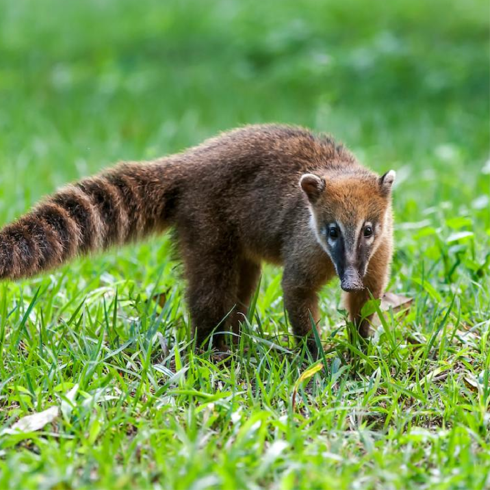
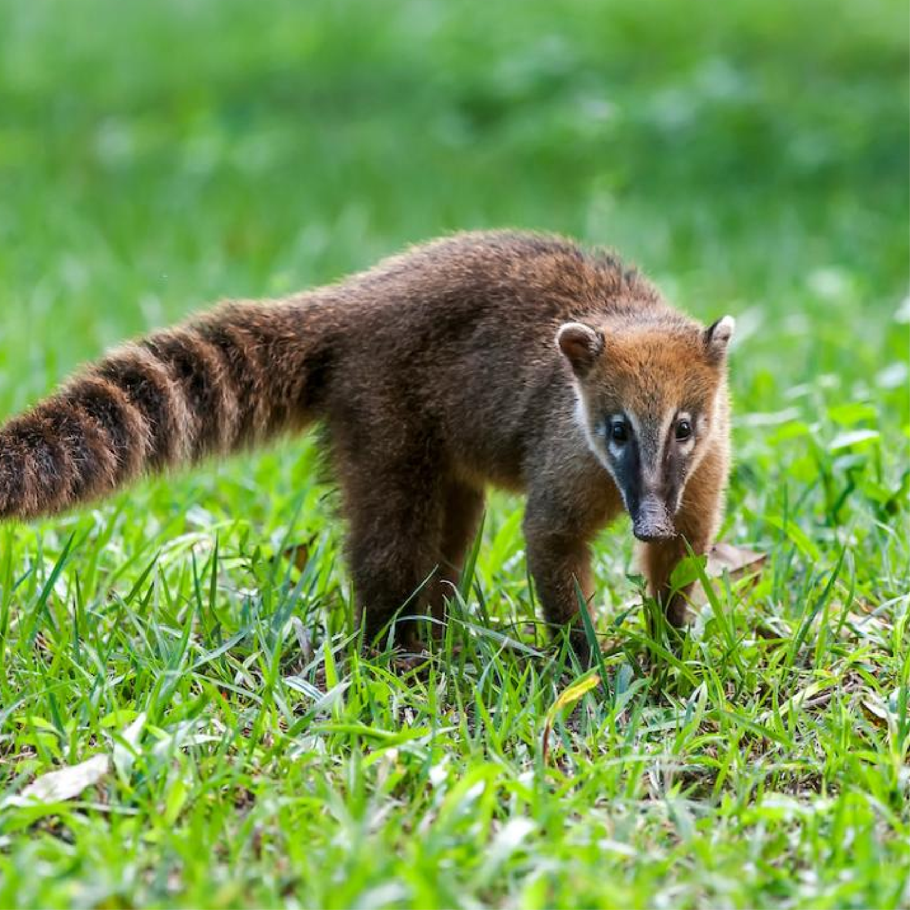

Quati-de-cauda-anelada
Quati-de-cauda-anelada
 De maneira geral, o corpo do quati costuma apresentar coloração cinzento-amarelado, sendo a
região ventral e as regiões laterais mais claras. O focinho é preto, alongado e sua ponta
apresenta movimento que auxilia explorar, juntamente com os membros torácicos, ninhos, tocas
e ocos de árvores. Pelo olfato, descobre pequenos vertebrados e invertebrados. As orelhas são
curtas, com capacidade de apresentar pelos esbranquiçados, características que também podem
estar presentes na face. Os pés e as mãos são pretos, como também os anéis presentes em sua
cauda peluda. Vale ressaltar que variações podem existir, visto que depende da idade do animal
e de sua variabilidade individual.
O quati-de-cauda-anelada pode atingir 30,5 centímetros de altura e comprimento corpóreo entre
43-66 centímetros. Apresenta, em média, 4 quilos de massa corporal (considerando quatis adultos
e juvenis, de ambos os sexos), podendo atingir até 11 quilos. Possui entre 22-69 centímetros de
cauda e são capazes de reproduzirem uma ninhada por ano. São mamíferos com hábitos diurnos e,
normalmente, dormem em árvores. O quati (Nasua nasua) se movimenta de formas diferentes: sobe
em árvores com o auxílio das garras, corre pelo chão, pula/desce da árvore para o chão de frente
ou de costas, andam de quatro patas e pulam de um tronco para outro.